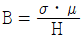

자기비파괴검사기사 (2018-03-04 기출문제)
1과목: 비파괴검사 개론
1. 다음 중 초음파탐상검사에서 결함을 가장 쉽게 검출할 수 있는 탐상시점은?
- 거친 다듬질 후
- 정밀 다듬질 후
- 표면이 거칠어지는 열처리 전
- 감쇠를 적게 할 수 있는 열처리 후
(정답률: 54%)

2. 외경 30mm, 두께 2.5mm의 튜브를 직경 20mm인 코일이 감겨있는 내삽형 탐촉자로 와전류탐상시험할 때, 충전율은 얼마인가?
- 0.44
- 0.64
- 0.67
- 0.80
(정답률: 62%)
3. 다음 중 방사선투과시험에서 X선 필름의 감도를 높이고 노출시간을 단축시키며, 상질을 개선하기 위해 사용되는 것은?
- 계조계
- 증감지
- 투과도계
- 필름관찰기
(정답률: 75%)
4. 다음 중 비파괴평가법과 그 기본원리의 연결이 잘못된 것은?
- 방사선투과검사-투과성
- 초음파탐상검사-펄스반사
- 와전류탐상검사-전자유도작용
- 중성자투과검사-탄성파
(정답률: 78%)
5. 자분 집적 모양의 식별성을 향상시키기 위해 고려할 사항이 아닌 것은?
- 식별성은 백그라운드와의 대비에 의해 좌우되므로 형광자분을 사용할 때는 형광휘도가 낮은 것을 선택하여 사용해야 한다.
- 불연속부에 충분한 양의 자분이 흡착되도록 균일하게 자분을 적용해야 한다.
- 적정한 자화로 불연속부로부터 충분한 누설자속이 형성되도록 해야 한다.
- 관찰하기 편리한 환경에서 눈과 시험면의 거리를 두고 바로 관찰을 해야 한다.
(정답률: 67%)
6. 금속을 원자로용, 고융점 구조재료, 반도체, 알칼리토류군(群)으로 분류할 때 반도체군에 해당되는 것은?
- W, Re
- Na, Li
- Ge, Si
- U, Th
(정답률: 75%)
7. 냉간가공된 금속에 대한 설명으로 틀린 것은?
- 냉간가공으로 금속결정 내의 전위는 감소한다.
- 융점이 낮은 금속에서는 가공 후 가열하지 않고 실온에 방치만하여도 회복이 일어난다.
- 냉간가공된 금속을 어닐링하면 회복, 재결정, 결정립성장의 단계를 거친다.
- 냉간가공으로 변형된 금속을 가열하면 그 내부에 새로운 결정립의 핵이 생기고 이것이 성장하여 변형이 없는 결정립으로 치환되는 과정을 재결정이라고 한다.
(정답률: 56%)
8. 고속도공구강(SKH2)의 대표적인 조성으로 옳은 것은?
- 18%Mo-4%W-1%Cr
- 18%Mo-4%Cr-1%Mn
- 18%Mo-4%Cr-1%V
- 18%W-4%W-1%V
(정답률: 60%)
9. 재료시험법 중 동적시험에 해당되는 것은?
- 인장시험(Tensile test)
- 충격시험(Impact test)
- 전단시험(Shearing test)
- 압축시험(Compression test)
(정답률: 72%)
10. 항온열처리인 마퀜칭(Marquenching)처리를 한 후 얻어지는 조직은?
- 펄라이트
- 마텐자이트
- 베이나이트
- 투루스타이트
(정답률: 80%)
11. Al-Cu 합금을 용체화처리한 다음 급냉한 후 시효처리할 때 석출되는 금속간화합물은?
- Cu2O
- CuAl2
- CO2Al
- Al2O3
(정답률: 71%)
12. 희토류 원소 또는 Th 첨가로 크리프 특성, 내열성 및 주조성이 좋아 제트엔진(Jet engine) 등의 구조용 재료로 가장 많이 사용되는 합금은?
- Al 합금
- Mg 합금
- Ni 합금
- Zn 합금
(정답률: 75%)
13. 절삭성을 높이기 위한 쾌삭 황동(free cutting brass)은 황동에 어떤 원소를 1.0~3.5% 정도 참가시킨 합금인가?
- P
- Si
- Sb
- Pb
(정답률: 53%)
14. 백금(Pt)에 대한 설명으로 옳은 것은?
- 백금은 회백색의 체심입방정 금속이다.
- 비중은 6.7이고 용융점은 670℃ 정도이며 내식성이 좋으므로 화학공업에 사용한다.
- 백금은 산화되지 않으나 P, S, Si 등의 알칼리, 알칼리토금속의 염류에는 침식된다.
- 45%~85%Rh 합금은 열전대로 사용하며, 0.8%~5%Rd의 백금합금은 장식용으로 사용한다.
(정답률: 54%)
15. 경도시험과 그 영문 표기가 틀린 것은?
- 쇼어 경도 : HS
- 비커즈 경도 : HV
- 브리넬 경도 : HB
- 로크웰 경도 : HL
(정답률: 78%)
16. 일반적인 서브머지드 아크 용접에 대한 설명으로 옳은 것은?
- 용입 깊이가 얕다.
- 사용 용접전류가 적어 용접능률이 낮다.
- 아크가 눈에 보이므로 용접상태를 확인하면서 용접할 수 있다.
- 용접선이 길고, 연속용접이 가능한 부재에 적용하는 것이 적합하다.
(정답률: 63%)
17. 금속 중에서 용접 입열이 일정한 경우에 열전도율이 큰 순서로 나열한 것 중 옳은 것은?
- 구리＞알루미늄＞스테인리스강
- 연강＞스테인리스강＞알루미늄
- 스테인리스강＞구리＞알루미늄
- 알루미늄＞스테인리스강＞구리
(정답률: 73%)
18. 용접작업에서 피닝(peening)을 실시하는 목적으로 옳은 것은?
- 슬래그를 제거하고 용접부의 강도를 높인다.
- 소성가공에 의한 용접부의 경도를 증가시킨다.
- 가공경화에 따른 용접부의 인성을 증가시킨다.
- 비드, 표면층에 성질 변화를 주어 용접부의 인장 잔류 응력을 완화시킨다.
(정답률: 65%)
19. 10분의 용접작업 중 6분 동안 아크를 발생시키고, 4분 동안 아크를 발생시키지 않고 쉬었다면, 이 용접기의 사용율은?
- 20%
- 40%
- 60%
- 100%
(정답률: 83%)
20. 일반적인 플라스마 아크 용접의 특징으로 틀린 것은?
- 용접속도가 빠르다.
- 용접비드의 폭이 넓다.
- 열에너지의 집중이 좋다.
- 각종 재료의 용접이 가능하다.
(정답률: 50%)
2과목: 자기탐상검사 원리
21. 다음 중 자분을 선택할 때 고려사항이 아닌 것은?
- 자기적 성질
- 입도
- 결집성
- 생조
(정답률: 40%)
22. 자분탐상에 대한 설명 중 틀린 것은?
- 탐상면에 검사액을 산포할 때는 세심한 주의를 하는 것이 좋다.
- 잔류법은 자화한 후 자분을 적용하는 것으로서, 결함 검출능력은 어떤 경우는 연속법보다 뛰어나다.
- 전류법일 때는 자분의 적용 종료 이전에 탐상면에 자성체를 접촉시켜야 한다.
- 복잡한 형상의 시험체에는 잔류법을 적용하는 쪽이 좋다.
(정답률: 59%)
23. 자속밀도와 자계의 세기와의 관계식으로 옳은 것은? (단, B : 자속밀도, H : 자계의 세기, μ : 투자율, σ : 전도율이다.)
- B=μ/H

- B=μㆍH
- B=μㆍσ
(정답률: 66%)
24. 자분탐상시험을 한 뒤 탈자를 할 경우 탈자전류의 초기 값은 어떻게 정하는 것이 좋은가?
- 검사할 때 사용한 전류 값과 같게 하여 탈자를 시작한다.
- 검사할 때 사용한 전류 값보다 조금 높게 하여 탈자를 시작한다.
- 검사할 때 사용한 전류 값보다 조금 낮게 하여 탈자를 시작한다.
- 자기포화치가 0에서부터 서서히 전류 값을 높여 탈자를 시작한다.
(정답률: 69%)
25. 일정 전류가 흐르는 도체에 전류의 양은 변화시키지 않고 직경을 2배로 하였을 때 도체 표면 자계의 세기 변화는?
- 동일하다.
- 1/2로 줄어든다.
- 1/4로 줄어든다.
- 2배로 늘어난다.
(정답률: 72%)
26. 자력선에 관한 내용 중 틀린 것은?
- 자력선은 N극에서 나와 S극으로 들어간다.
- 자력선은 도중에 갈라지거나, 서로 교차하지 않는다.
- 자력선 위의 한점에서 그은 법선의 방향은 그 점에서 자계의 방향이다.
- 자력선의 수가 많은 곳이 자계가 세다.
(정답률: 72%)
27. 자화전류 중 표피효과로 인하여 자속이 표면에만 집중되어 표면검사에 국한하는 전류는?
- 직류
- 교류
- 맥류
- 충격전류
(정답률: 72%)
28. 프로드법에 있어서 탐상 유효범위에 영향을 미치는 요소가 아닌 것은?
- 프로드 간격
- 자분 및 검사액
- 시험체의 크기
- 시험면과 전극의 접촉 상태
(정답률: 69%)
29. 잉고트(ingot)에 들어가는 기공과 개재물이 압연에 의해 변형된 결함으로 인해 기계가공한 단면에 평행하게 선모양으로 나타나는 자분모양은?
- 단류선(flow line)
- 재질경계 지시(material junction indication)
- 편석 지시(segregation indication)
- 라미네이션 지시(lamination indication)
(정답률: 71%)
30. 자계 H[A/m] 중에 있는 자분을 자기 쌍극자로 생각할 때에 자분에 작용하는 기자력 F가 커지는 경우는?
- 자분의 진공 투자율이 작을수록
- 자분의 투자율이 작을수록
- 자분의 반자계 계수가 작을수록
- 자분의 체적이 작을수록
(정답률: 64%)
31. 다음 중 자속밀도가 가장 큰 것은?
- 연철
- 주철
- 니켈
- 코발트
(정답률: 52%)
32. 자화 방법 중 원형자화로 구성된 것은?
- 프로드법, 축통전법, 전류관통법, 코일법
- 프로드법, 축통전법, 직각통전법, 전류관통법
- 코일법, 직각통전법, 전류관통법, 자속관통법
- 극간법, 축통전법, 직각통전법, 자속관통법
(정답률: 72%)
33. 자분탐상시험 시 잔류법으로 시험할 때 고려하여야 할 사항으로 맞는 것은?
- 충격전류는 잔류법에 적용할 수 있다.
- 반파정류를 사용하는 극간법이 효과적이다.
- 반파정류를 사용하는 프로드(Prod)법이 효과적이다.
- 교류를 사용하는 자분탐상기는 보자성이 높은 자성체에는 이용할 수 없다.
(정답률: 69%)
34. 대형 시험체의 표면을 극간법으로 검사할 때의 장점이 아닌 것은?
- 전기적 직접 접촉이 없어도 가능하다.
- 소형이며 휴대가 간편하다.
- 임의의 불연속을 검출할 수 있다.
- 상자성체의 재료에 효과가 좋다.
(정답률: 67%)
35. 매끈하게 기계 가공된 부분에 생긴 피로균열같은 미세한 표면결함을 검출하기에 가장 좋은 자분탐상검사는?
- 직류자화하여 건식자분을 적용
- 교류자화하여 습식자분을 적용
- 반파정류로 자화하여 건식자분을 적용
- 반파정류로 자화하여 습식자분을 적용
(정답률: 78%)
36. 자분탐상시험에 필요한 자분의 성질을 바르게 설명한 것은?
- 작은 결함의 검출을 위해 착색제나 형광재의 두께가 두껍고 흡착력이 낮아야 한다.
- 누설자속에 의해 생긴 자극에 대하여 흡착성능이 뛰어나고, 형성된 자분모양의 식별 성능이 좋아야 한다.
- 시험면이 여러 가지 색을 띠고 있는 경우 형광자분보다는 비형광 자분을 선택하는 것이 대비가 잘된다.
- 일반적으로 누설자속밀도가 낮은 경우 비형광자분을 선택하는 것이 형광자분을 선택하는 것보다 유리하다.
(정답률: 64%)
37. 직경이 200mm이고 길이가 500mm인 강자성체 봉을 축통전법으로 1000A의 전류를 흐르게 할 때 시험체 표면에서 자계의 세기는 어느 정도인가?
- 400 A/m
- 800 A/m
- 1200 A/m
- 1600 A/m
(정답률: 28%)
38. 자분탐상 시 표피효과의 두께라 함은 자속밀도가 표면 값이 몇 %가 되는 깊이를 말하는가?
- 약 17%
- 약 37%
- 약 50%
- 약 63%
(정답률: 74%)
39. 자분재료를 선정하기 위하여 재료의 투자율과 자기이력곡선을 조사하는 경우 다음 중 자분재료로 가장 적합한 것은?
- 높은 초기투자율을 가지며, 폭이 좁은 자기이력곡선을 갖는 재료
- 낮은 초기투자율을 가지며, 폭이 좁은 자기이력곡선을 갖는 재료
- 높은 초기투자율을 가지며, 폭이 넓은 자기이력곡선을 갖는 재료
- 낮은 초기투자율을 가지며, 폭이 넓은 자기이력곡선을 갖는 재료
(정답률: 56%)
40. 전류관통법과 자속관통법의 차이는 무엇인가?
- 자속의 발생 방식
- 자분과 와전류의 탐상 방식
- 형광과 비형광의 자분 종류
- 거치식과 휴대식인 장치의 크기
(정답률: 74%)
3과목: 자기탐상검사 시험
41. 자분탐상시험에서 거친 용접부의 검사에 최대 감도를 얻기 위한 방법으로 맞는 것은?
- Wire Brush 로 용접부의 Scale과 Slag을 제거한다.
- 비교 목적으로 표준 용접부를 사용한다.
- 용접 Bead에 Grease를 칠한다.
- 판재면과 같이 용접 Bead를 평평하게 기계가공 한다.
(정답률: 58%)
42. 자분탐상검사에서 직육면체 모양의 시험체 모서리 부근에 무관련지시가 고르게 나타났다면 그 이유로 가장 적합한 것은?
- 시험체의 금속조식 차이 때문이다,
- 모서리 부근의 표면이 깨끗하기 때문이다.
- 모서리 부근에서 자속밀도가 희박하기 때문이다.
- 자력선은 시험체의 가장 얇은 부분으로 들어가고 나오는 경향이 있기 때문이다.
(정답률: 61%)
43. 다음 중 교류자화의 장점으로 틀린 것은?
- 표면결함 검출 우수
- 탈자 용이
- 잔류법의 적용에 우수
- 반자계의 영향이 적음
(정답률: 53%)
44. 다음 중 자분탐상시험 시 의사지시의 주요 원인이 되는 것은?
- 전류 선택의 잘못
- 자화 전류의 과소
- 자화 전류의 과다
- 탈자 전류의 과소
(정답률: 66%)
45. 코일을 이용해 자분탐상시험을 하는 경우 일반적으로 사용되는 공식을 적용하기 위한 전제조건을 설명한 것 중 옳지 않은 것은?
- 코일로 한번 자화시키는 시험체의 길이가 18인치를 초과해서는 안된다.
- 시험체의 길이/직경 비는 2이하이어야 한다.
- 시편의 단면적은 코일내부 단면적의 1/10보다 커서는 안된다.
- 시험체의 직경과 길이에 관련된 치수비를 제한하는 것은 반자계의 영향 때문이다.
(정답률: 67%)
46. L/D가 5인 원주형 시험품의 중앙부에 10[Oe]세기의 유효 자계를 적용시키려면 코일의 자계의 세기를 약 얼마로 해야 하는가? (단, L : 길이, D : 직경, N : 반자계 계수, μ : 비투자율, N/4π=0.04, μ = 1200이다.)
- 48[Oe]
- 480[Oe]
- 1200[Oe]
- 30000[Oe]
(정답률: 58%)
47. 자분탐상시험법 중 비교적 큰 시험체의 용접부에 많이 사용되는 방법은?
- 극간법과 프로드법
- 직각통전법과 축통전법
- 코일법과 축통전법
- 전류관통법과 자속관통법
(정답률: 82%)
48. 다음 중 표면 아래 결함(subsurface defect)을 검출하는데 가장 적합한 자화전류는?
- 단상반파정류
- 단상전파정류
- 삼상반파정류
- 삼상전파정류
(정답률: 52%)
49. 자분탐상 시험결과 길이가 3.5mm, 폭이 1mm인 결함이 한 개 발견되었다. 이 결함은 무슨 결함인가?
- 선형결함
- 원형결함
- 자극지시결함
- 분산결함
(정답률: 85%)
50. 습식 자분을 섞어 쓰는 분산매로 오일을 사용하고자 한다. 분산매 성질로 적합하지 않은 것은?
- 점성이 낮을 것일수록 좋다.
- 황 성분 함량이 적은 것이 좋다.
- 발화점(Flash point)이 낮은 것이 좋다.
- 냄새가 독하게 나지 않는 것이 좋다.
(정답률: 77%)
51. 외경 62mm인 튜브를 전류관통법으로 300A의 자화전류로 원형자화할 때 튜브 외부표면에서의 자계강도는 약 몇 A/m인가?
- 540
- 1240
- 1540
- 2040
(정답률: 37%)
52. 용접부의 자분탐상시험 시 주의사항으로 맞는 것은?
- 일반적으로 용접부의 열처리 후 탐상의 자화방법은 프로드법을 사용해선 안된다.
- 용접부의 용접 후 열처리 등의 지정이 있는 경우, 합격 여부를 위한 시험은 열처리 전에 실시한다.
- 용접부의 용접 후 열처리 지정이 있는 경우, 합격 여부를 위한 시험은 언제나 수행할 수 있다.
- 압력용기의 내압시험 완료 후에 하는 시험의 자화방법은 원칙적으로 극간법을 사용하지 않는다.
(정답률: 59%)
53. 자분탐상시험 시 부품에 무관련성 지시가 검출될 경우 취할 조치로 가장 적당한 것은?
- 부품 사용에는 문제가 없으므로 그대로 사용한다.
- 실제 결함의 존재유무를 파악하기 위해 재검사한다.
- 완전히 제거시켜야 한다.
- 부품에 문제가 있으므로 폐기한다.
(정답률: 82%)
54. 자분탐상검사법 중 봉제품의 축방향의 결함을 검출하기 좋은 방법은?
- 극간법
- 프로드법
- 축통전법
- 직각통전법
(정답률: 56%)
55. 형광자분탐상검사에 사용되는 자외선등에 대한 설명으로 틀린 것은?
- 고압수은등에 자외선 필터를 부착하여 사용한다.
- 사용되는 파장은 320~400nm 범위의 근자외선이다.
- 관찰에 필요한 자외선의 강도는 최소 800~1000μW/cm2 이상이다.
- 사용되는 자외선의 강도는 필터 앞면으로부터 멀어질수록 거리의 제곱으로 증가한다.
(정답률: 68%)
56. 자화와 자속밀도에 대한 단위계별 단위를 잘못 나타낸 것은?
- 1[Oe]=103/4[A/m]
- 1[Mx]=10-8[Wb]
- 1[G]=10-4[Wb/m2]
- 1[T]=10-2[Wb/m2]
(정답률: 43%)
57. 자분탐상검사의 코일법에서 유료자계란?
- 검사품에 전류를 통하여 부가되는 자계
- 검사품에 적용된 자장에 반하여 감소시키는 자계
- 검사품에 적용된 자계에서 반자계를 뺀 자계
- 검사품에 전류를 통하여 침투되는 자계
(정답률: 73%)
58. 자분탐상검사 중 형광-습식법을 사용하는 것이 바람직한 경우는?
- 밸브 몸체의 주조결함 검사
- 대형 볼트의 나사산 균열 검사
- 알루미늄 배관의 축방향 용접부 검사
- 대형 압력용기의 원주방향 용접부 검사
(정답률: 75%)
59. 자분탐상검사 결과, 나타날 수 있는 지시모양에 관한 설명 중 의사지시에 해당하지 않는 것은?
- 표면 요철에 의해 나타난 자분모양
- 시험체의 단면적이 급격히 변화하고 있는 곳에 나타난 자분모양
- 잉고트(Ingot)조괴 시에 발생한 재질적, 조직적 이상의 자분모양
- 자화된 시험체에 다른 시험체(강자성체)가 접촉하여 발생한 자분모양
(정답률: 56%)
60. 긴 환봉의 표면에 축방향 심(seam)형태의 불연속을 찾는데, 가장 효과적인 탐상 방법은?
- 자속관통법
- 축통전법
- 코일법
- 전류관통법
(정답률: 50%)
4과목: 자기탐상검사 규격
61. 철강 재료의 자분 탐상 시험방법 및 자분모양의 분류(KS D 0213)에서 시험품을 자화시켰을 때 시험품에 생긴 자극에 의해 발행하며, 가한 자장을 감소시키는 자장을 규정한 용어는?
- 항자장
- 역자장
- 반자장
- 유효자장
(정답률: 71%)
62. 철강 재료의 자분 탐상 시험방법 및 자분모양의 분류(KS D 0213)에서 자분의 분산매에 따라 분류된 시험방법은?
- 연속법, 잔류법
- 건식법, 습식법
- 직류, 맥류
- 형광자분, 비형광자분
(정답률: 73%)
63. 보일러 및 압력용기에 대한 자분탐상검사(ASME Sec. V, Art. 7)에서 교류 요크를 사용할 대, 최대 극간 거리에서의 최소 인상력은?
- 3.5kg
- 4.5kg
- 8.5kg
- 18kg
(정답률: 79%)
64. 철강 재료의 자분 탐상 시험방법 및 자분모양의 분류(KS D 0213)에서 시험기록의 기호가 “EA~1500"으로 기재하였을 경우의 설명으로 옳은 것은?
- 코일법을 사용하여 1500A의 직류를 흐르게 하였다.
- 축통전법을 사용하여 1500A의 교류를 흐르게 하였다.
- 극간법을 사용하여 1500A의 직류를 흐르게 하고 탈자하였다.
- 프로드법을 사용하여 1500A의 교류를 흐르게 하고 탈자하였다.
(정답률: 87%)
65. 철강 재료의 자분 탐상 시험방법 및 자분모양의 분류(KS D 0213)에 규정된 자외선 조사장치의 최소 점검 주기는?
- 월 1회
- 분기 1회
- 반기 1회
- 연 1회
(정답률: 73%)
66. 보일러 및 압력용기에 대한 자분탐상검사(ASME Sec. V, Art. 7)에 규정된 케토스 링(Ketos ring) 시험편에 가공된 홀의 개수는 몇 개인가?
- 3개
- 6개
- 9개
- 12개
(정답률: 63%)
67. 철강 재료의 자분 탐상 시험방법 및 자분모양의 분류(KS D 0213)에서 의사 모양을 확인하기 위한 방법으로 틀린 것은?
- 표면거칠기 지시-시험면을 매끈하게 하여 재시험 한다.
- 자기펜 자국-탈자 후 재시험한다.
- 전류지시-전류를 작게 하거나 잔류법으로 재시험 한다.
- 재질경계 지시-연속법으로 전류를 높여 재시험 한다.
(정답률: 70%)
68. 철강 재료의 자분 탐상 시험방법 및 자분모양의 분류(KS D 0213)에서 잔류법으로 시험할 때의 통전시간은?
- 1/2초~1초
- 1/4초~1초
- 1초~2초
- 2초~4초
(정답률: 87%)
69. 철강 재료의 자분 탐상 시험방법 및 자분모양의 분류(KS D 0213)에서 용접부를 연속법으로 시험할 때, 탐상에 필요한 자계의 강도는?
- 1200~2000 A/m
- 2400~3600 A/m
- 3600~5400 A/m
- 6400~8000 A/m
(정답률: 60%)
70. 보일러 및 압력용기에 대한 자분탐상검사(ASME Sec. V, Art. 7)에서 한쪽으로 치우친 중심도체를 사용하여 검사를 실시할 때, 중심도체의 직경이 15mm일 경우에 시험유료범위는 얼마인가?
- 15mm
- 30mm
- 60mm
- 90mm
(정답률: 42%)
71. 보일러 및 압력용기에 대한 자분탐상검사(ASME Sec. V, Art. 7)에 규정된 인공흠 심(Artificial flaw shim)의 종류가 아닌 것은?
- A형
- B형
- C형
- R형
(정답률: 35%)
72. 철강 재료의 자분 탐상 시험방법 및 자분모양의 분류(KS D 0213)에 규정된 자외선 조사 장치에 관한 사항 중 틀린 것은?
- 자외선 강도 측정은 자외선 강도계를 사용한다.
- 수은등의 누설이 있을 경우는 수리 또는 폐기한다.
- 1년 이상 사용하지 않을 경우에는 사용시에 점검한다.
- 자외선 조사장치의 강도는 필터면에서 38cm 떨어진 위치에서 1000μW/cm2 이상이어야 한다.
(정답률: 68%)
73. 보일러 및 압력용기에 대한 자분탐상검사(ASME Sec. V, Art. 7)에 규정된 프로드법에서 자화전류의 개방회로 전압이 25V를 초과할 때 프로드 팁(tip)으로 사용하지 않도록 권고하는 재료는?
- 납
- 철
- 구리
- 알루미늄
(정답률: 42%)
74. 보일러 및 압력용기에 대한 자분탐상검사(ASME Sec. V, Art. 25 SE-709)에 규정된 지시의 기록방법에서 건식자분만 해당되는 기록 방법은?
- 스케치
- 전사
- 사진촬영
- 문서 기록
(정답률: 68%)
75. 철강 재료의 자분 탐상 시험방법 및 자분모양의 분류(KS D 0213)에서 형광자분을 사용하는 시험에는 자외선 조사 장치를 이용한다. 자외선 파장 범위로 옳은 것은?
- 120~200nm
- 320~400nm
- 520~600nm
- 820~900nm
(정답률: 86%)
76. 철강 재료의 자분 탐상 시험방법 및 자분모양의 분류(KS D 0213)에서 잔류법에만 사용할 수 있는 자화전류는?
- 교류
- 직류
- 맥류
- 충격전류
(정답률: 64%)
77. 철강 재료의 자분 탐상 시험방법 및 자분모양의 분류(KS D 0213)에 따른 자분모양의 분류에 관한 사항으로 틀린 것은?
- 독립한 자분모양은 선상 및 원형상으로 분류한다.
- 연속한 자분 모양은 여러 개의 자분모양이 거의 동일 직선상에 연속으로 존재한다.
- 연속한 자분 모양의 길이는 자분모양의 간격을 제외한 각각의 길이를 합친 값으로 한다.
- 분산한 자분 모양은 일정한 면적 내에 여러개의 자분모양이 분산하여 존재하는 자분모양이다.
(정답률: 80%)
78. 보일러 및 압력용기에 대한 자분탐상검사(ASME Sec. V, Art. 7)에 따라 비형광자분을 사용한 경우 지시를 판독하기 위한 시험체 표면에서의 최소 조도(Lux)는?
- 500
- 1000
- 5000
- 10000
(정답률: 56%)
79. 철강 재료의 자분 탐상 시험방법 및 자분모양의 분류(KS D 0213)에서 시험장치가 시험체에 대하여 수행해야 하는 4조작에 해당되지 않는 것은?
- 전처리
- 자화
- 자분의 적용
- 탈자
(정답률: 66%)
80. 철강 재료의 자분 탐상 시험방법 및 자분모양의 분류(KS D 0213)에서 여러 개의 자분모양이 거의 동일 직선상에 연속하여 존재하고 서로의 길이가 2mm 이하인 경우에 자분모양의 분류는?
- 균열에 의한 자분모양
- 선상의 자분모양
- 연속한 자분모양
- 분산한 자분모양
(정답률: 72%)